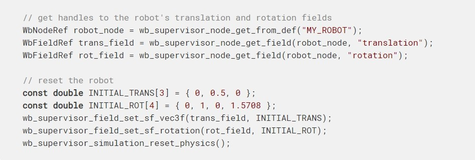
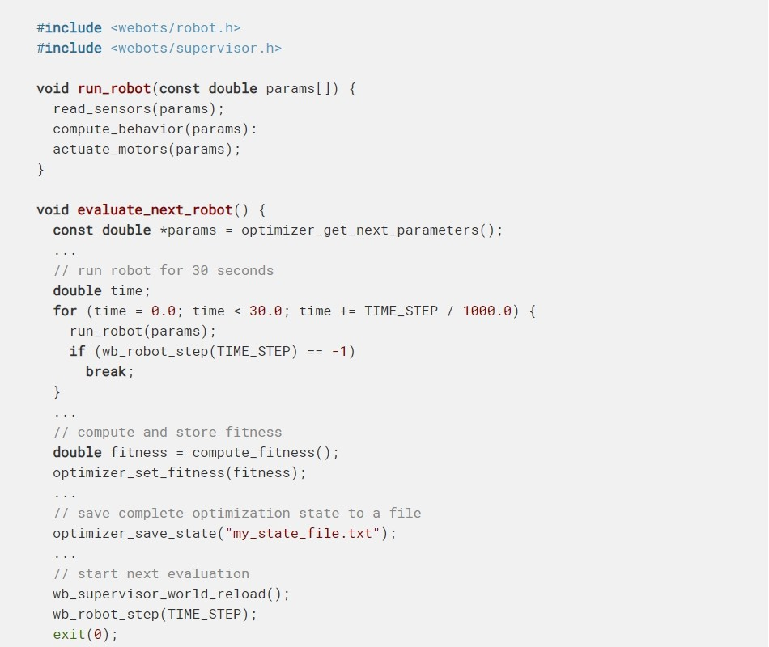
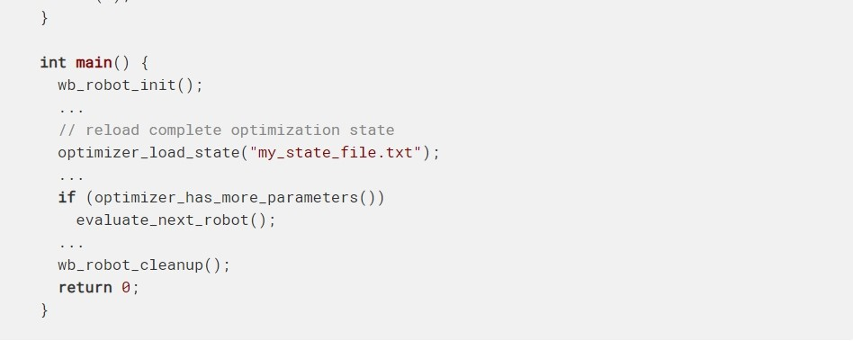
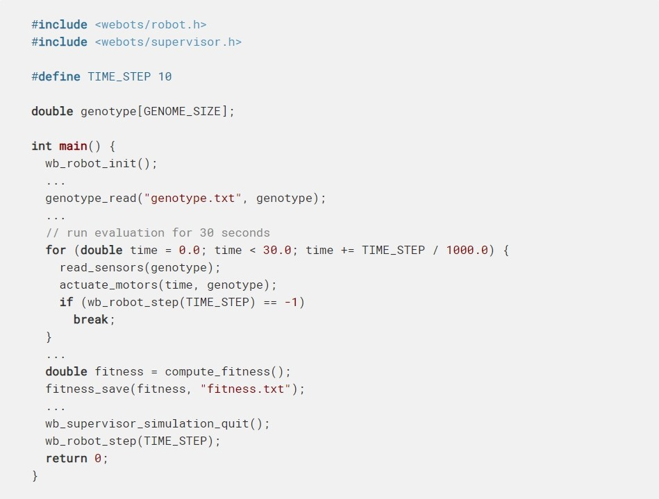
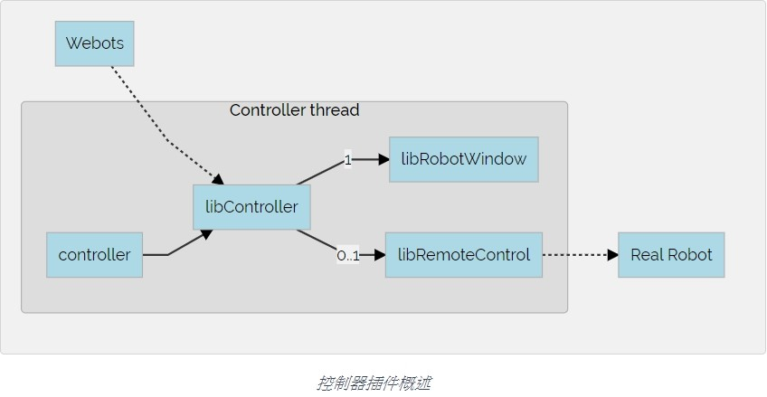

webots tutorial <<
Previous Next >> webots 入門
編成基礎(使用數值優化方法,控制器插件)
使用數值優化方法
指數
選擇正確的主管方法
在Webot中有幾種使用優化算法的方法。大多數方法都依賴於Supervisor控制器。
數值優化通常可以分解為兩個單獨的任務：
- 運行優化算法：系統搜索，隨機搜索，遺傳算法（GA），粒子群優化（PSO），模擬退火等。
- 使用優化算法指定的一組參數運行機器人行為。
需要決定的重要事情之一是，這兩個不同任務的實現應該進入同一個控制器還是在兩個單獨的控制器中。讓我們討論兩種方法：
使用單個控制器
如果您的仿真一次只需要評估一個機器人，例如，您正在優化人形機器人的運動步態或單個機器人的行為，則可以在同一控制器中實現這兩個任務；這樣會導致代碼更簡單。這是僅使用一個控制器對兩個參數a和b進行系統優化的偽代碼示例：

在此示例中，機器人運行了30個模擬秒，然後評估了適應度，然後將機器人移回到其初始位置。請注意，此控制器需要在其字段設置為的機器人節點中執行，以訪問讀取和重置機器人位置所需的功能。supervisorTRUEwb_supervisor_field_*
使用兩種不同類型的控制器
相反，如果您的仿真需要同時執行多個機器人，例如群體機器人，則建議使用兩種不同類型的控制器：一種用於優化算法，另一種用於機器人的行為。優化算法應該放在Supervisor控制器中，而機器人的行為可以放在常規（非Supervisor）控制器中。
由於這些控制器將在單獨的系統進程中運行，因此它們將無法訪問彼此的變量。但是，為了指定需要評估的參數集，他們將不得不通過其他某種方式進行通信。可能並且建議使用Webots 發射器和接收器在Supervisor控制器和其他控制器之間交換信息。例如，在典型情況下，Supervisor控制器會將評估參數（例如，基因型）發送給機器人控制器。機器人控制器聆聽其接收器，等待一組新參數。收到後，機器人控制器開始執行由參數集指定的行為。在這種情況下，Supervisor控制器需要一個Emitter，而每個機器人都需要一個Receiver。
根據算法需求，可以在Supervisor控制器或單個機器人控制器中評估適應性。如果在機器人控制器中進行評估，則需要將適應性結果發送回Supervisor控制器。這種雙向通信類型需要使用其他發射器和接收器。
重置機器人
使用優化算法時，您可能需要在每次適應性評估之後或之前重置機器人。有幾種重置機器人的方法：
使用wb_supervisor_field_set_ *和wb_supervisor_simulation_reset_physics函數
您可以使用wb_supervisor_field_set...和wb_supervisor_simulation_reset_physics功能輕鬆重置機器人的位置，方向和物理狀態，下面是一個示例：

上述方法的缺點在於，它僅會重置機器人的主要位置和方向。這對於某些類型的優化可能很好，但對於其他類型則不夠。儘管可以向要重置的數據集添加更多參數，但是有時很難重置所有內容。這樣既不會重置電動機位置，也不會重置機器人控制器。應當使用該wb_motor_set_position功能重置電動機位置，並且應該通過從主管進程向機器人控制器進程發送消息（使用Webots 發射器 / 接收器通信系統）來重置機器人控制器。機械手控制器程序應該能夠處理此類消息並相應地重置其狀態。
使用wb_supervisor_world_reload函數
此功能從一開始就重新啟動物理模擬和所有控制器。使用此方法，所有設置都將重置，包括物理特性，電機位置和控制器。但是此功能還會重新啟動稱為該wb_supervisor_world_reload功能的控制器，這通常是運行優化算法的控制器，結果是失去了優化狀態。因此，對於使用這種技術，有必要開發可以保存和恢復優化算法完整狀態的功能。優化狀態應在調用wb_supervisor_world_reload函數之前保存，並在Supervisor控制器重新啟動時重新加載。這是一個偽代碼示例：


例如，如果將此技術與遺傳算法一起使用，則該optimizer_save_state功能應至少保存當前GA群體的所有基因型和適應性結果。如果將此技術與“粒子群優化”一起使用，則該optimizer_save_state功能至少應保存當前群中所有粒子的位置，速度和適應性。
使用wb_supervisor_world_reset函數
與該wb_supervisor_world_reload功能類似，此功能可重置物理模擬。但是，它不會重新啟動控制器。該功能的優點是可以使用該wb_supervisor_node_restart_controller功能僅重新啟動所需的控制器。通常情況下，你將重新啟動機器人控制器，而不是主管之一。因此，Supervisor控制器無需保存和恢復優化算法的完整狀態。
通過啟動和退出Webots
最後，最後一種方法是啟動和退出Webots程序以進行每個參數評估。這聽起來似乎有些開銷，但實際上，與評估控制器所需的時間相比，Webots的啟動時間通常很短，因此這種方法非常合理。
例如，可以從Shell腳本或適合於運行優化算法的任何類型的程序中調用Webot。每次啟動Webot顯然都會完全重載世界，因此每個機器人都將從相同的初始狀態啟動。這種方法的缺點是優化算法必須在Webots之外進行編程。可以使用任何編程語言（例如Shell腳本，C，PHP，perl等）編寫此外部程序，前提是可以像C標準system函數那樣調用Webots並等待其終止。相反，必須在Webots控制器中實現參數評估。
通過這種方法，優化算法和機器人控制器在單獨的系統過程中運行，但是它們必須相互通信才能交換參數集和適用性結果。一種簡單的方法是使它們通過使用文本文件進行通信。例如，優化算法可以將基因型值寫入文本文件，然後調用Webots。當Webots啟動時，機器人控制器讀取基因型文件並執行參數評估。機械手控制器完成評估後，會將適應性結果寫入另一個文本文件，然後調用該wb_supervisor_simulation_quit函數終止Webot。然後，控制流程返回到優化程序，該程序可以讀取結果適應度，將適應度與當前基因型相關聯並繼續進行下一個基因型。
這是機器人評估控制器可能的（偽代碼）實現：

您將在Webots發行中找到使用優化技術進行模擬的完整示例：在“ WEBOTS_HOME / projects / samples / curriculum / worlds ”目錄中查找名為“ advanced_particle_swarm_optimization.wbt”和“ advanced_genetic_algorithm.wbt”的世界。這些例子在Cyberbotics機器人課程的高級編程練習中進行了描述。
控制器插件
控制器功能可以通過用戶實現的插件進行擴展。控制器插件的目的是簡化機器人特定的機器人窗口和遠程控制包裝程序的編程。
對控制器插件進行編程而不是直接在控制器中進行編程更加方便，因為它大大提高了代碼的模塊化和可伸縮性。例如，一個機器人窗口可以用於多個機器人。
指數
基本原理
無論使用哪種語言，控制器可執行文件在啟動時都與Webots控制器庫（libController）鏈接。控制器插件是一個共享庫，由libController在特定事件後根據其類型動態加載（在運行時）。
下圖顯示了控制器插件系統的概述。在此圖中，虛線箭頭顯示瞭如何加載共享庫，大虛線表示進程間通信（IPC）。libController和Webots之間的IPC是一個管道（在Windows中，這是一個命名管道，否則是一個本地域套接字）。libRemoteControl和真實機械手之間的IPC由用戶定義（TCP / IP，串行等）。
該系統的設計如下。所有實體（控制器，遠程控制庫和機械手窗口庫）應僅調用libController接口（Webots API）功能。出於模塊化原因，控制器不應知道其機器人窗口和實際機器人。唯一的例外是有關機械手窗口庫的信息，該窗口庫可以知道遠程控制庫以進行初始化和監視。這可以通過通過了libController API來完成wb_robot_get_mode，wb_robot_set_mode和wb_remote_control_custom_function功能。當然，這些規則很容易被打破，因為每個實體都運行在同一個流程中。但是，我們建議您尊重他們以獲得良好的設計。
控制器插件被設計為用C / C ++編寫，因為結果應該是一個動態庫。但是，當然可以使用它們之間的C / C ++包裝器以其他語言編寫它們。
加載後，libController會調用一些控制器插件功能（入口點）。必須定義一組入口點，以使控制器插件順利運行。這些入口點中的一些是必需的，而某些是可選的。
所述機器人節點通過其定義了控制器的插件的位置窗口及其REMOTECONTROL字段。
控制器插件在進程的主線程（也稱為GUI線程）中運行：與控制器可執行文件相同。這意味著，如果插件的入口點被阻止，則控制器也將被阻止。並且如果插件崩潰，則控制器也崩潰。
《參考手冊》中介紹了將窗口和遙控器轉換為現有路徑的搜索算法。
借助主Makefile（與用於構建控制器的文件相同）來構建每個分佈式共享庫：
WEBOTS_HOME/resources/Makefile.include

機器人窗口
機器人窗口使程序員可以有效地為其機器人創建自定義用戶界面。可以通過雙擊虛擬機器人或使用上下文菜單來打開機器人窗口。機械手節點的窗口字段指定機械手窗口。
機器人窗口以HTML格式實現，並提供以下功能：
- 他們依靠HTML佈局和JavaScript編程。
- 它們使用兩個JavaScript函數直接與機器人控制器通信：window("<robot window name>").receive和webots.window("<robot window name>").send。等效的控制器功能是wb_robot_wwi_receive_text和wb_robot_wwi_send_text。
- 它們已經可以在網絡上使用，可以用來在網頁上顯示機器人窗口。
robots/thymio/thymio2.wbt示例仿真中提供了一個HTML機械手窗口的簡單示例，並演示了：
- 如何在機器人窗口中顯示傳感器信息。
- 如何從機器人窗口向控制器程序發送用戶界面事件（例如鼠標單擊）。
- 如何從控制器程序更改機器人窗口的標題。
HTML機械手窗口可以與使用任何受支持的編程語言（即C，C ++，Python，Java，MATLAB和ROS）編寫的控制器程序進行通信。如果在模擬運行過程中更改或重新啟動了機器人的控制器，則與同一機器人節點關聯的機器人窗口也將重新啟動。
遠程控制插件
遠程控制插件允許使用Webots API輕鬆有效地創建接口，以與真實的機器人進行通信。遠程控制庫的主要目的是使用與真實機器人通信的協議來包裝機器人使用的所有Webots API函數。通常，程序（客戶端）在真實機器人上運行，並對通信協議進行解碼以與真實機器人設備進行對話。
當實體調用wb_robot_set_modelibController函數時，將初始化遠程控制庫。該實體通常是libRobotWindow，因為使用GUI初始化通信（即輸入機器人的IP地址等）非常方便。
遠程控制庫有兩個入口點：
- bool wbr_init(WbrInterface *ri)
libController調用此函數以初始化遠程控制庫。在第一個wb_robot_set_mode函數調用之後調用它。該功能的目標是將給定的WbrInterface功能與遠程控制庫中的功能映射到結構中。
libController調用此函數以清理庫。
該WbrInterface結構具有多個功能（強制性），必須對其進行映射才能使遠程控制庫平穩運行。他們來了：
- bool wbr_start(const char *args)
當應該開始與真實機器人的連接時（即wb_robot_set_mode(WB_MODE_REMOTE_CONTROL, ...)從控制器調用時），將調用此函數。該函數的返回值應告知連接是否成功。該參數與wb_robot_set_mode初始化遙控器時給該功能的參數匹配。由於機器人窗口庫通常負責調用該wb_robot_set_mode函數，因此它們之間傳遞的結構應該匹配。
當與真實機器人的連接應停止時，將調用此函數。通常，應該在停止連接之前發送停止實際機器人執行器的命令。
libController經常調用此函數以檢查連接的有效性。此函數返回的值應始終與連接有效性匹配。
- void wbr_stop_actuators()
調用此功能可停止實際機器人的執行器。當用戶按下模擬器的暫停按鈕時，將調用此方法。
- int wbr_robot_step(int period)
當控制器進入步進循環時，將調用此功能。此功能的目的是發送執行器命令，然後讀取啟用的傳感器的值。定時問題應該在那裡解決。機械手應至少等待一段時間（毫秒），如果 超過該時間段，則返回增量時間。
如上所述，必須與真實機器人一起使用的所有Webots API功能都必須包裝在遠程控制庫中。為達到這個：
- 必須將libController的內部狀態設置為與機械手的當前狀態匹配。
通常，當已知傳感器的值時wbr_sensor_set_value，必須調用相應的 功能。
通常，在設置執行器的命令時，將wbr_actuator_set_value)調用相應的 功能，並且必須將其發送給實際的機器人。
遠程控制API和WbrInterface結構的完整定義包含在以下文件中：
WEBOTS_HOME/include/controller/c/webots/remote_control.h
例如，如果您希望能夠使用真實機器人的距離傳感器，則必須包裝該wbr_set_sampling_period函數（設置遠程控制庫的內部狀態以僅在需要時讀取此距離傳感器），然後調用wbr_distance_sensor_set_value刷新距離傳感器後（通常到wbr_robot_step函數中）將函數存儲到遠程控制庫中。
可以在以下目錄中找到完整的示例（使用藍牙與e-puck機器人通信）：
WEBOTS_HOME/projects/robots/e-puck/plugins/remote_controls/e-puck_bluetooth
webots tutorial <<
Previous Next >> webots 入門